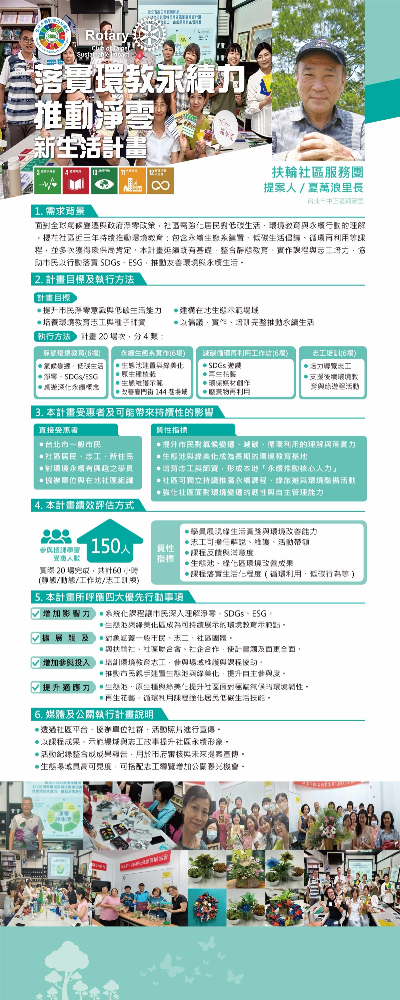

提案人 · 夏萬浪里長（台北市中正區網溪里）

面對全球氣候變遷與政府淨零政策，社區需強化居民對低碳生活、環境教育與永續行動的理解。櫻花社區近三年持續推動環境教育：包含永續生態系建置、低碳生活倡議、循環再利用等課程，並多次獲得環保局肯定。本計畫延續既有基礎，整合靜態教育、實作課程與志工培力，協助市民以行動落實 SDGs、ESG，推動友善環境與永續生活。
| 類別 | 場次 | 內容 |
|---|---|---|
| 靜態環境教育 | 6 場 | 氣候變遷、低碳生活；淨零、SDGs／ESG；桌遊深化永續概念 |
| 永續生態系實作 | 6 場 | 生態池建置與綠美化；原生種植栽；生態維護示範；改善廈門街 144 巷場域 |
| 減碳循環再利用工作坊 | 6 場 | SDGs 遊戲；再生花藝；環保媒材創作；廢棄物再利用 |
| 志工培訓 | 6 場 | 培力導覽志工；支援後續環境教育與綠遊程活動 |